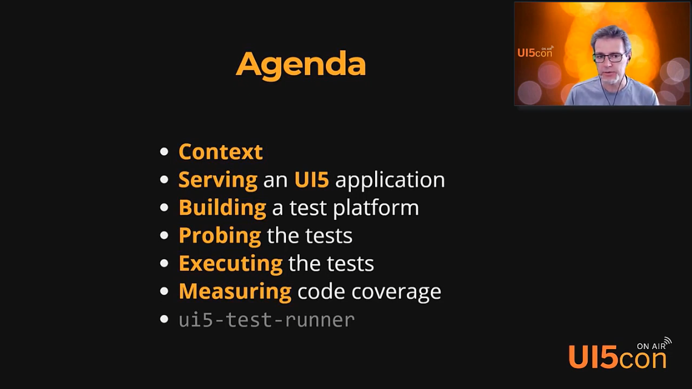
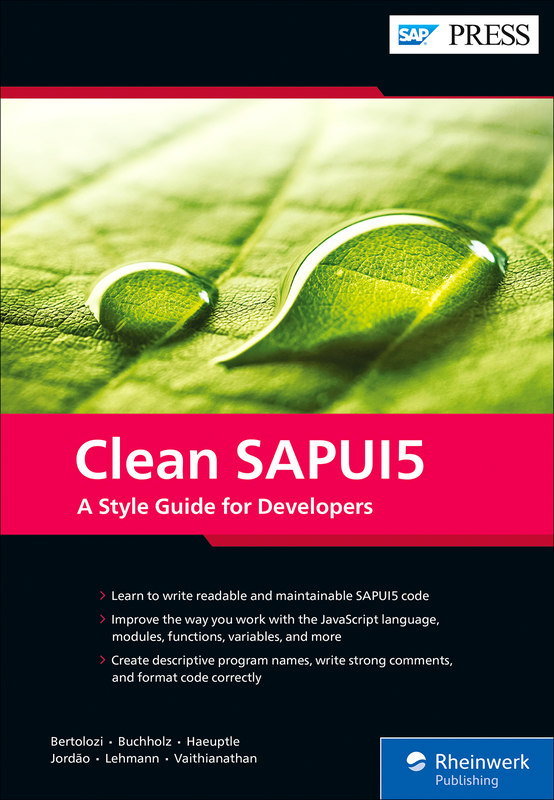

| Starship Troopers |
ui5-test-runner v3
Presented by Arnaud Buchholz
|
Agenda
Context
Back to 2018...
UI5Con'18 |
UI5Con'19 |
UI5Con'20 |

|

|
|
| A journey with OPA | Use UI5 to test your ODATA service | Testing UI5 applications |
|
recording training-ui5con18-opa |
recording node-ui5 |
e-book |
UI5Con'21 |
UI5Con'22 |
|  |  |
| A different approach to UI5 tests execution | Clean SAPUI5 |
|
recording training-ui5con18-opa |
book recording (DEVTOBERFEST'22) samples |
If it's not tested, it does not work

- qUnit: unit testing
- OPA: component and integration testing
One Page Acceptance Tests
- UI behavior testing
- JavaScript based
- Tightly integrated with UI5
- Asynchronous with active polling mechanisms
- Backend is mocked
Executing qUnit & OPA tests
- As simple as running a web page
- A report documents execution results

Compared to other automation frameworks
Puppeteer, Selenium or Webdriver.io are framework agnostic,
one must rely on the generated HTML to code automation.
They are generally designed for End 2 End testing.
OPA is designed by and for UI5 developers: one manipulates UI5 controls, it enables integration testing.
Compared to other automation frameworks 🆕
WDI5 is built on top of Webdriver.io to enable UI5 controls selection in the context of End 2 End testing.
Continuous Integration & Delivery
The tests must be automated in a pipeline to validate the code before merging and / or shipping the new version.
The current situation
Introducing Karma
- CI pipeline based on the Karma runner
- OPA tests may use the iFrame mode
- Huge memory consumption
- On big suites, the tests are abruptly aborted (browser crash)
Karma execution model
- All tests in one window
- One iFrame to run them all
- Sequential execution
- Coverage information
Karma is deprecated
The Karma development team announced the deprecation of the tool.

The alternative ?
Put simply, ui5-test-runner is the fastest way to automate qUnit & OPA tests :
- Almost no configuration
- Parallel execution of test pages
- Code coverage ready
DEMO
- How to install and use
- Monitoring, coverage and parallelism
Limits of version 1
- Built as a proof of concept
- Delivered with puppeteer only
- Failures are not easy to diagnose
(missing traces, incomplete screenshots...) - Inbuilt server not as good as
@ui5/cli
From v1 to v2+
More feedback
- Standard option parsing
- Interactive & standalone report
- Browser traces (console, network)
- Custom report generation
More browsers
puppeteerselenium-webdriver(chrome, firefox, edge)jsdom(experimental)- Capabilities tester for browsers
More flexibility
- legacy mode : the runner serves the application
- remote mode : the application is already served and accessible through an URL
(supports
@ui5/cli, typescript or any special environment)
DEMO
- Test UI5 sample application
- Test an application served with
@ui5/cli
Key Take-Aways
If it's not tested, it does not work
karmais deprecatedui5-test-runnerruns the qUnit & OPA tests and is flexible enough to adapt to your scenario
(or may if you ask politely)